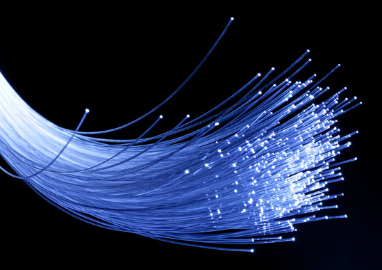

FiDo
FiDo može pohraniti, analizirati i pomoći vam u donošenju boljih odluka o vašim optičkim resursima. Koristeći MySql i PHP pozadinu s najnovijim tehnologijama koje upravljaju frontendom, ova se web aplikacija može staviti na većinu standardnih web poslužitelja. Jednom postavljeno, ovo vam omogućuje pristup podacima s bilo kojeg mjesta, a budući da je Fido pogodan za tablete, to uključuje i na terenu.Kada ste zadnji put testirali vlakna? FiDo vam može reći. Imate li vlakna koja treba zamijeniti? Fido vam može reći. FiDo pohranjuje i provjerava prigušenje svaki put kada testirate vlakno. Koristeći proizvođačke standarde, FiDo će automatski usporediti izmjereno slabljenje s očekivanim slabljenjem i prikazati jesu li postolja tolerantna ili ne.

Optičko vlakno (ili vlakno na britanskom engleskom jeziku) je fleksibilno, prozirno vlakno izrađeno izvlačenjem stakla (silicijevog dioksida) ili plastike promjera nešto debljeg od promjera ljudske kose. Optička vlakna najčešće se koriste kao sredstvo za prijenos svjetlosti između dva kraja vlakna i pronalaze široku primjenu u optičkim komunikacijama, gdje dopuštaju prijenos na veće udaljenosti i pri većim širinama pojasa (brzine prijenosa podataka) od električnih kablovi. Vlakna se koriste umjesto metalnih žica, jer signali putuju uz njih s manje gubitaka; osim toga, vlakna su imuna na elektromagnetske smetnje, problem od kojeg pate metalne žice. Vlakna se također koriste za osvjetljenje i slikanje, a često su zamotana u snopove, tako da se mogu koristiti za prijenos svjetlosti u slike ili slike iz zatvorenih prostora, kao u slučaju fibroskopa. Posebno dizajnirana vlakna koriste se i za niz drugih primjena, neki od njih su optički senzori i laserski vlakni.
Projekt bilježi podatke o zgradi, nivou(pod), mjestu(soba), ormarićima, pločama, portovima i ostalom.
| Building UID | Number | Names | Levels | Notes | Address | Last Modified |
|---|---|---|---|---|---|---|
| 0329 | 999 | Test Building | 3 | This is the hub test building | NULL | 09.08.2017. |
| 0330 | 998 | Alpha | 3 | This is test building Alpha | NULL | 09.08.2017. |
| 0331 | 997 | Beta | 3 | This is test building Beta | NULL | 09.08.2017. |
| 0332 | 996 | Gamma | 3 | This is test building Gamma | NULL | 09.08.2017. |